Prompt Life v0.27.3
Play Set Stabilization + Full-Slate QA
This pass stabilizes the current five-challenge Play set, cleans progress language, adds a debug-only Play progress inspector, verifies localStorage behavior, and captures mobile QA screenshots.
What Changed
- Bumped app and package version from
0.27.2to0.27.3. - Added a Play-screen debug inspector that appears only when
?debug=1is present. - Cleaned Play progress language: fresh challenges now show
Progress: Not startedinstead of a fake best result. - Removed remaining learner-facing Play wording that mentioned score, points, leaderboards, or failure-state framing.
- Updated README, storage/reset docs, and Play mode docs so retired activities are no longer described as the current Play slate.
Play Landing Audit
The visible Play landing shows one ordered list: Glossary Dojo, Attention Match, Probability Picker, Context Stack, Prompt Run. Token Pipeline Relay and How AI Learns are not prominent and remain compatibility-only. Attention Weave is preserved as a legacy route that opens Attention Match.
Fresh and progress states were checked at 390px, and a fresh state was checked at 320px. No horizontal overflow was detected.
Progress + Storage QA
- Read and displayed shared Play state from
promptlife.playChallenges.v1. - Read and bridged Glossary Dojo state from
promptlife.glossaryDojo.v1. - Preserved legacy bridge reads for
promptlife:v1:gameInsights,pl.gameInsights, Prompt Run progress keys, trace-complete keys, and learning-tour compatibility keys. - Reset QA confirmed shared Play and Glossary Dojo keys are cleared. The app then rewrites normal default empty state keys as it reloads, which is expected.
Challenge Smoke Test
Practice glossary terms.
Attention MatchOpened to active Attention Match challenge.
Probability PickerOpened to active Probability Picker challenge.
Context StackOpened to active Context Stack challenge.
Prompt RunOpened to Prompt Run v2 capstone.
BadgeShowed 5 of 5 play challenges under seeded completion state.
Prompt Run v2 Check
Prompt Run opens as the capstone challenge with the six-station v2 structure. The 390px active-screen screenshot showed the header, station rail, first station, and bottom nav without horizontal overflow.
Previous Report Check
The v0.27.2 Prompt Run v2 report is present at docs/play/prompt-life-v0-27-2-prompt-run-v2-report.pdf. Its HTML references eight screenshot images, and the PDF contains image objects, so the previous screenshots are embedded.
Verification
npm run typecheck: passed.npm run build: passed with the existing Vite large-chunk warning.npm run build:pages: passed with the existing Vite large-chunk warning.npm run audit:answers: passed.- Browser QA: 11 screenshot/smoke states passed, with no horizontal overflow at 320px or 390px.
Known Issues
- The existing Vite large-chunk warning remains.
- Reset writes normal empty app state keys again after clearing; this is expected and unrelated to the shared Play / Dojo reset target.
- The debug inspector is intentionally compact; it is a developer aid, not a learner-facing feature.
Screenshots
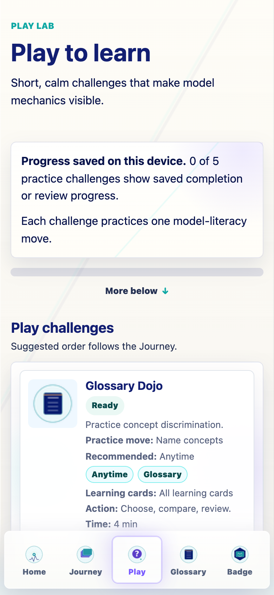
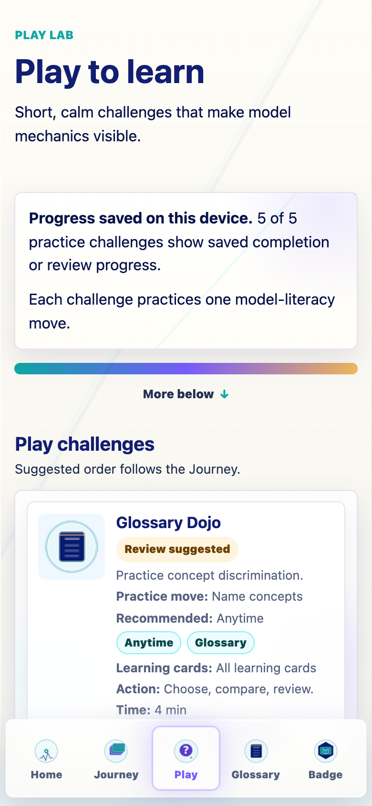
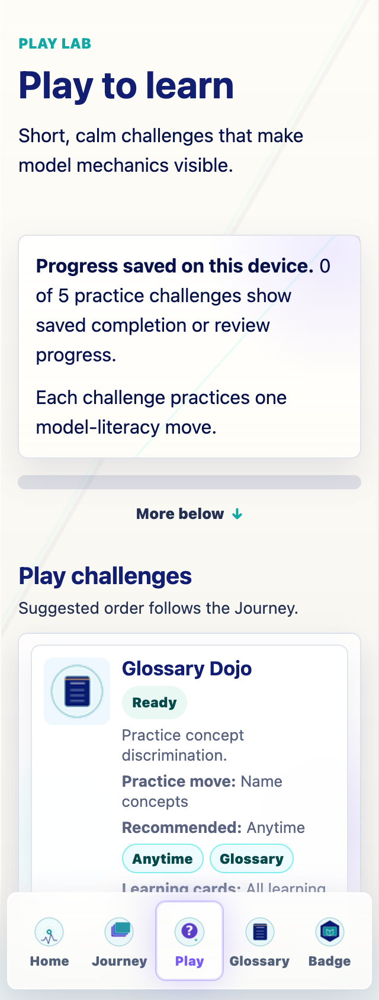
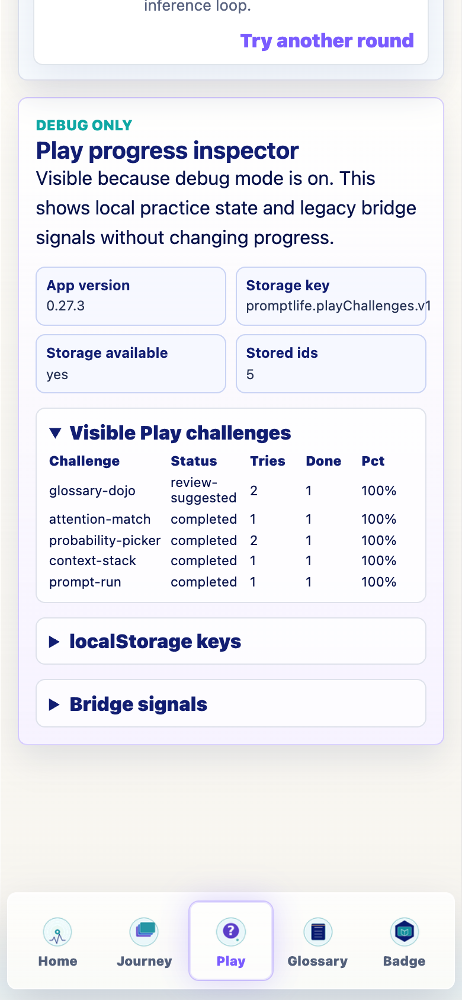
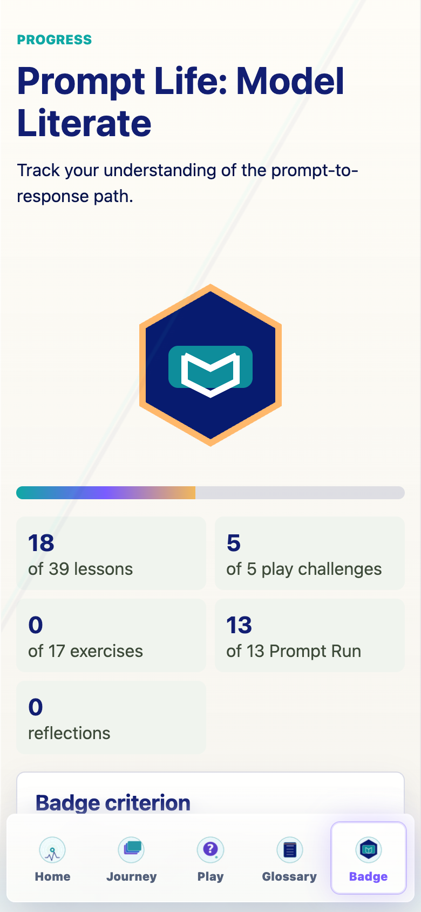
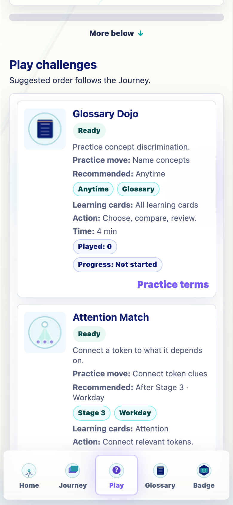
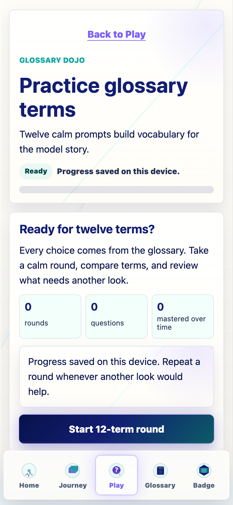
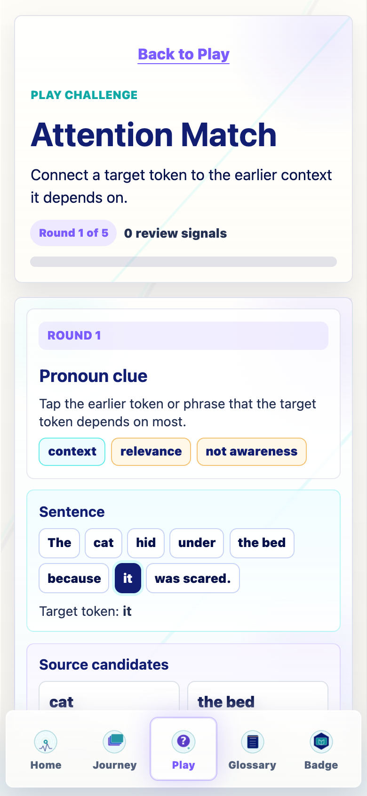
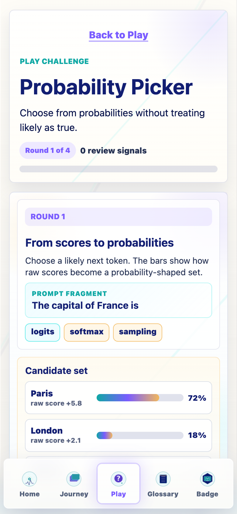
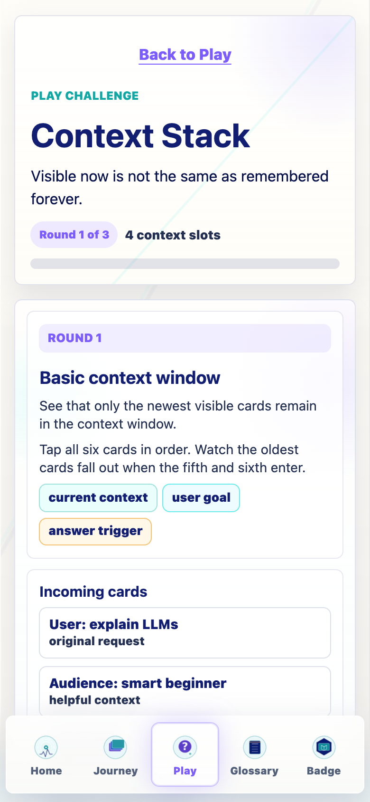
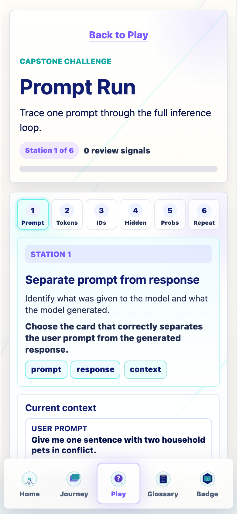